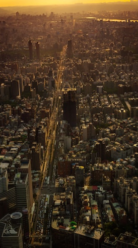

.svg)
Attraction
観光名所
細い路地の階段に沿って建つ古い館に、提灯が灯るノスタルジックな風景。1989年、映画「非情城市」の舞台になったことをきっかけに再び注目を集めると共に、日本では、九份の町中にある建物が2001年公開の映画「千と千尋の神隠し」に登場する湯婆婆の湯屋を彷彿させるとして話題に。日本統治時代に建てられた古い建物が残ることから、どこか懐かしい雰囲気が漂う町並みは日本人の琴線に触れ、今や台湾で行きたい観光地ナンバーワンとなりました。


おすすめ観光時間は幻想的な夕暮れがねらい目 15:00～19:00
高さは509.2m 地下5階＋地上101階からなり、名前の由来にもなっている。エレベーターは東芝エレベータ製で、毎分1,010メートル（時速60.6キロメートル）の速さで上昇でき、地上1階から展望台のある89階（地上382.2メートル）まで39秒で到達する。展望台、オフィス、レストラン、ショッピングモールなどが入る台湾を代表するランドマークワー。有名なカウントダウンパーティーをはじめ節目に合わせたライトアップを行っている。


- 
おすすめ観光時間は展望台営業時間帯 11:00～19:00
Night Market
夜市
台北観光の夜の目玉と言えば、なんと言っても夜市（ナイトマーケット）があげられます。 毎日市内の各所でひらかれ、夕方から夜遅くまで多くの人々で賑わっています。 絶品Ｂ級グルメ・小吃からファッション、ゲームといったお店が集まっています。


Access
アクセス
■MRT（地下鉄）：（初乗り20元）
乗り方は日本の地下鉄とほぼ同じ。
改札を通る時には、切符・ICカード共にタッチ。台北MRTは全て各駅停車。
■バス：（初乗り15元）
バス停は、バス停のポールが立っているだけ、大通りでは車道の真ん中のバスレーン沿いにあります。乗りたい場合、バスに向かって手を挙げます。
乗車して、現金で払う場合は運転手に行先を告げて運賃箱にお金を入れます。
■タクシー：（初乗り70元）
市内の移動で気軽に使うことが出来ます。MRTなどが運行しない真夜中や早朝の移動にも便利です。新幹線の駅や有名観光地などにはタクシー乗り場が準備されているので、そこから乗りましょう。ホテルならフロントで呼んでもらいます。
■EASYCARD（悠遊カード）：（販売額100元）
現金をチャージして使うことが出来る交通系ICカード
台北旅行の際に手に入れておくと便利です
MRT・バス・台湾鉄路などで使用することができ、
切符を買う手間がなく、運賃が割引（MRTは二割引き）になります。